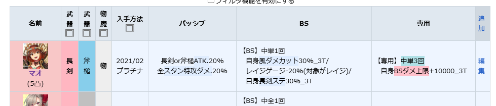

ミナシゴノシゴトWikiのキャラ性能比較から、【専用】以後を隣の列を設置して分離します。 TableQueryブックマークレットでブレイブスキルと専用武器を分けて検索することができます。
このボタンをブックマークバーにドラッグしてください
ブックマークレットのコードをコピー:
✓ 新しいブックマークを作成します ✓ 名前を設定します ✓ URLの欄に上のコードをペーストします ✓ 保存して完了です
HOMEへ戻る